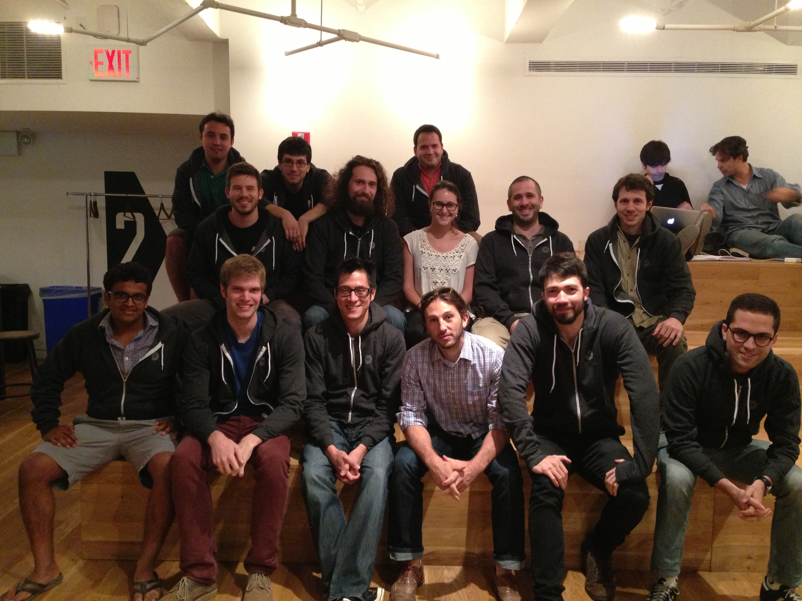

Web-Development
General Assembly is a New York City technology hub. Through full-time immersive classes run by seasoned profesional developers, Web-Development Immersive students are prepared for professional development roles across the stack.
Three Core Studies
- Back-End: As Ruby on Rails developers, model-view-controller frameworks are second nature. We've migrated...
- Front-End: Start with the basics... HTML, CSS, JS. Take the next step with modern Rails and Javascript template management systems.
- Development Process: Using today's agile development managment systems, we git things done.
Back-end
- Ruby (1.9 & 2)
- Rails (3.9 & 4)
- PostGreSQL
Front-end
- Javscript
- HTML5
- PostGreSQL
Process
- Agile-Development
- Scrum & XP
- Pair-Programming